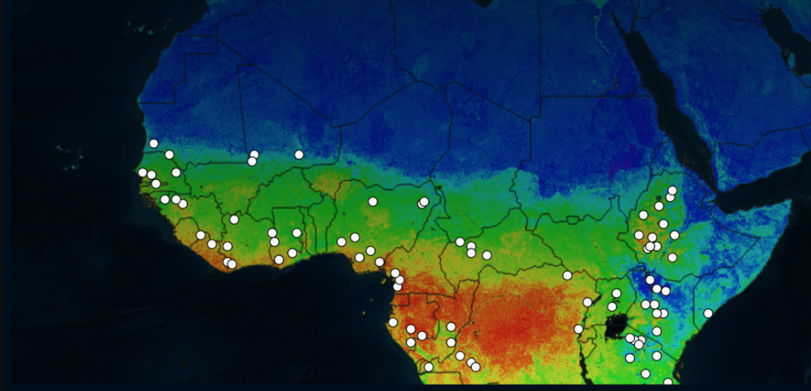
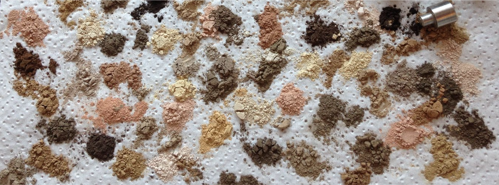
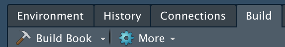
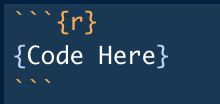
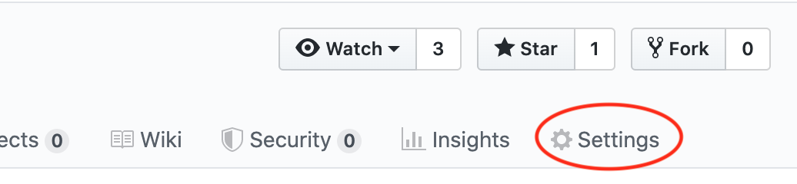
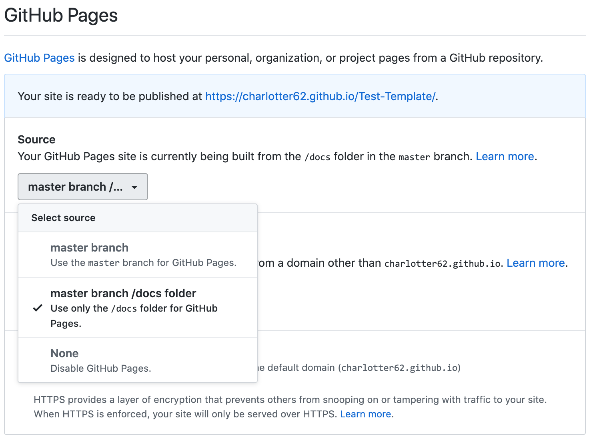

3 Bookdown
3.1 What is Bookdown?
Bookdown is a useful R package for making digital books in HTML, PDF or E-book format. It is what we used to create this Code-Sharing-Guide! While you can use it make any type of book you like, it is especially useful for code documentation since it allows you to seamlessly integrate code into your book. HTML books can become easy yet elegant websites to share your code with the world.
The creators of bookdown made a very thorough guide of the tool, showing how many possibilities there are: Bookdown Documentation Guide
3.2 Example Books
The following are examples of how other scientists harnessed the power of Bookdown to document their research projects.
LandTrendr
This is a guide by Oregon State explaining LandTrendr, a change detection method they designed that can be used in earth engine. Notice that while the book is built within RStudio, their code is in python. Though only R code can be run within your book (showing the outputs), bookdown can still be used to document code of other languages.
LandTrendr Guide
Soil Mapping
This documentation by Leo Ramirez on soil mapping, is an example of how R-code
can be intergrated into your book.
Soil Mapping Documentation
This is an example of a textbook written with bookdown. It explains Soil Mapping and is written by Tom Hengel. Soil Mapper Textbook

MIR Soil Predictions
At the center, we are currently working on a site to document our process of predicting soil properties using Mid-Infrared Spectroscopy.
MIR Soil Predictions

3.3 Getting Started
(Adapted from Bookdown Documentation: Getting Started)
Download an Example
The best way to get started is to download an example book and experiment with making changes.
As stated earlier, this guide itself is a bookdown book and it’s source files can be downloaded from the WHRC Github account: Code-Sharing-Guide Github Repository
Bookdown has also provided a few template books: Bookdown Minimal, contains the basic skeleton of a bookdown book while, Bookdown Demo has more features, such as cross references and R-code.
Install RStudio
Download the latest version if your RStudio version is lower than 1.0.0
Download RStudio
Install Bookdown
Build the Book
1- Open up the R-Project within the book’s folder
Within the folder you will see several R-Markdown files, indicated by the extension .Rmd
The index file has information about the book as a whole and how it will be produced. It can also contain the Introduction to the book. Other .Rmd files will be labeled starting with 01, 02, etc, in the order you would like them added to the book.
If you open an R-Markdown file, it should have one or more headers…
# for major tabs/chapters/sections of the book
## for subtabs
… and so on.
2- Build the book using the ‘Build’ Tab, usually in the upper right hand corner

When the book it built, it will “knit” these R-Markdown files into the desired output format (HTML, PDF or E-Book). The book should pop-up on your screen once it is loaded.
R Code
For help with the syntax within the rmarkdown files, see the documentation for knitr and rmarkdown:

{r} Declares an R-Code Chunk
# Creates a new tab/section/chapter
## Creates a new subtab/section/chapter
**Word** 2 or more stars around a word makes it bold
[title](link address) for linking websites
 for inserting an image
Add 4 or more spaces to get a new line
3.4 Publishing to the Web
Bookdown books can be hosted by either Github or Bookdown.com
Detailed instructions for how to publish your book to Github (as we did with this book) can be found here:
Publish to Github
For a quick way to publish to Github, use the repository for this guide as a template…
1- Create a repository from this template
2- Go to Settings
To see the website made your repository, go to Settings in the top right corner of your repository page

3- Update Github Pages Setting
Scroll down to Github Pages and change Source: ‘None’, to ‘master branch /docs folder’. For this particular example, the index.html file, used to build the website is located in the docs folder. The .nojekyll file located in the docs folder, suppresses Github Pages from creating the website with Jekyll, and allows the bookdown file to load appropriately.
The link to your website will appear- something like…
https://user-name.github.io/repo-name/
If it does not work, try adding `index.html to the end…
https://user-name.github.io/repo-name/index.html
or delete the README file of the repo (for some reason this can interfere)

4- Edit the site to make your own book
You can then edit the site for your project by cloning/downloading the repository to your computer, making changes and pushing those back to Github. If you are happy with the formatting of this document, all that will have to change is the .Rmd files in the folder. It is important to note that the book must be built again after changes for your .Rmd files are made, to see those changes on the website.